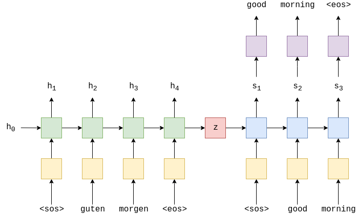

flowchart LR A[guten morgen] --> B[Sequence to Sequence Model] B --> C[good morning]
The most common seq2seq models are encoder-decoder models, which commonly uses recurrent neural network RNN architectures. These models are explained in two pioneering papers.( Sutskever et al., 2014 Cho et al., 2014)
High Level Overview
A seq2seq model has two blocks, one is encoder and the other block is decoder. Now when we pass input sequence to the encoder it process each item one after the other and it compiles the information in a vector also called context vector. After the processing the entire sequence, the encoder sends context vector to decoder and then decoder start generating the output sequence item by item.
Note
This context vector is a vector of float numbers. You can set the size of context vector while defining the model. It is basically the hidden units in the encoder RNN. Usually the size of context vectors be like 256, 512 or 1024.

Going by the design of RNN, it takes two inputs one input as word from input sentence and other is hidden state. The word however needs to be represented by a vector before processing. Now to transform the word to vector we turn to the word embedding algorithms. We can use pre-trained embedding or train our own embedding on our dataset. These turn word into vector spaces that capture the semantic information of the word. For example king - man + woman = queen.
The RNN outputs next hidden state in form of vector and a output also in form of vector.
A last hidden state is actually the context vector output of Encoder RNN which we pass along to the decoder.
The decoder also maintains a hidden state which it passes from one time stamp to another.
Encoder-Decoder Architecture & Maths
In the above image we can see a german sentence passed through the embedding layer(yellow) and then input into the encoder(green). We also append a start of sequence
Now this encoder rnn can be represented as : \[ h_{t} = EncoderRNN(e(x_{t}), h_{t-1 }) \]
Note
Here we are using RNN but it can be any recurrent architecture like LSTM or GRU.
Here we have \(X = \{x_{1},x_{2}.....x_{t}\}\) and where \(x_{1} = <sos>, x_{2} = guten\), etc. The initial hidden state is usually initialized as zero or a learned parameter.
Once we passed the final word \(x_{t}\), via embedding layer we use the final state \(h_{t}\) as the context vector i.e. \(h_{t}=z\). This is vector representation of entire source sentence.
Now we have our context vector \(z\), we can start decoding it to get the output sentence. Here again we append start and end of sequence tokens to the target sentence. At each time-step the input to the decoder RNN(blue) is the embedding \(d\), of the current word \(d(y_{t})\), as well as the hidden state from the previous time step, \(s_{t-1}\), where the initial decoder hidden state, \(s_{0}\), is the context vector, \(s_{0} = z = h_{t}\), which simply means the initial decoder hidden state is the final encoder hidden state. Hence similar to encoder we can represent decoder as :
\[ s_{t} = DecoderRNN(d(y_{t}), s_{t-1}) \]
Note
Although input embedding layer, \(e\) and output embedding layer \(d\) both are represented in yellow but they are two different embedding layer with their own parameters.
In the decoder we need translated word as output therefore at each time-step we use \(s_{t}\) to predict what we think is the next word in the sequence, \(\hat{y}_{t}\) by passing it through a linear layer, shown in purple.
\[ \hat{y}_{t} = f(s_{t}) \]
The words in the decoder are always generated one after another, with one per time-step. The first word always is
When training/testing our model, we always know how many words are in our target sentence, so we stop generating words once we hit that many. During inference it is common to keep generating words until the model outputs an
Once we have our predicted target sentence, \(\hat{Y} = \{\hat{y}_{1},\hat{y}_{2}....\hat{y}_{T} \}\) , we compare it against our actual target sentence, \(Y = \{y_{1},y_{2}....y_{T} \}\), to calculate our loss. We then use this loss to update all of the parameters in our model.
Code sequence to sequence model
In the below colab notebook we will code seq2seq model and leverage the free gpu from google for faster computing. Click on colab logo.

|
The model we created in above colab notebook faces challenge with long sentences and this context vector becomes a bottleneck. To solve this problem attention mechanism was introduced which we will see next post.
References
https://github.com/bentrevett/pytorch-seq2seq
https://jalammar.github.io/visualizing-neural-machine-translation-mechanics-of-seq2seq-models-with-attention/